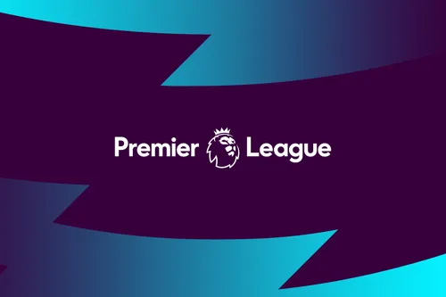

NEWS

January 2022 Latest Transfers & News
See all the moves in the winter transfer window as Watford sign Brazilian defender Samir More ...
Vote for December's Budweiser Goal of the Month
Pick from strikes by Bernardo, Maupay, Mount, Lucas, Gray, Lacazette, De Bruyne and Alexander-Arnold More ...
Eight sides handed Double Gameweek 22
Spurs, Chelsea, Leicester and Man Utd among those to play twice in next round of fixtures in FPL More ...

Premier League statement
Kevin Beeston steps down from his role on the Premier League Board More ...
Choose December's Barclays Manager of the Month
Vote from Arteta, Conte, Guardiola and Klopp after they led their teams to impressive results More ...
Official FPL Podcast: How to attack FPL in 2022
Join Kelly Somers and guests for expert Fantasy advice following a busy festive period More ...